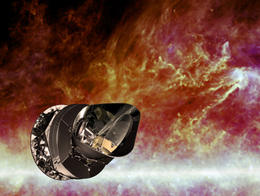
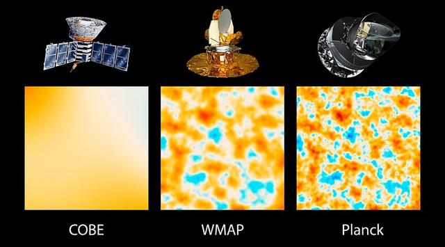

宇宙学几乎完美，除了“邪恶轴心”
李淼 发表于 2013-03-28 17:40

欧洲空间局的普朗克卫星通过观测所谓大爆炸余热中微小的不均匀性，为科学家提供了迄今最为精确的宇宙学数据。图片来源：space.com
本文作者:李淼
现代宇宙学大约有80多年的历史，从埃德温·哈勃发现宇宙膨胀算起，宇宙学成为了一门实证科学。
在我看来，宇宙学有过三次大发现期。第一个大发现期是爱因斯坦为首的理论家用广义相对论建立起宇宙学的基础，后来由哈勃将这个理论放在坚实的观测基础之上。第二个大发现期始于上世纪60年代，从发现宇宙微波背景辐射起，到宇宙学家建立现实的热大爆炸理论，再到上世纪80年代初阿兰·古斯等人提出暴涨理论。第三个大发现期则从上世纪90年代开始，一直持续到现在，看势头还会继续下去。
上世纪90年代发现了什么？一是发现了宇宙微波背景辐射中微小的非各向同性，二是发现宇宙在加速膨胀。这两个发现先后在2006年和2011年获得诺贝尔物理学奖，其重要性可见一斑。过去20年来，所有宇宙学观测不过是将这两项发现更加精确化。这样的结果是，我们已经有了所谓的宇宙学“标准模型”。
宇宙学“标准模型”
这个“标准模型”真的很标准吗？也许是，也许不是。
在我们的宇宙中，存在4种完全不同的能量。第一种，也是我们熟知的一种，是重子物质，或者说可见物质。这些物质组成地球及地球上的生命和非生命，组成我们的太阳系和银河系，以及天上一切可以通过电磁手段观测的星系和星系间的物质。第二种，是暗物质。这些物质其实比可见物质还要多，大约是可见物质的5倍，存在于银河系和一切类似的星系中。第三种，就是前面提到的宇宙微波背景辐射。它们是能量很低的光子，在现在的宇宙能量组分中还占不到万分之一。第四种，就是暗能量了。这是宇宙中最大的分支，占能量组分70%左右。也许还有第五种、第六种能量，如宇宙中微子背景和引力波背景。这些组分理论上存在，还没有被探测到。
可以肯定，大约在140亿年前，宇宙诞生于大爆炸。在大爆炸之初，也许发生过时间极短的暴涨（多长时间还不确定，只能说大约是10-30秒或稍长）。在这个极短的暴涨期，我们现在的可见宇宙从一个微观空间突然长大了1026倍，成为一个宏观宇宙。在暴涨结束的时候，一切粒子产生了。此时宇宙非常热，温度超过了任何可见天体中的温度。接下来，宇宙继续膨胀，但膨胀的速度变慢。到了宇宙大小大约是现在一半的时候，由于所有物质的密度一直被稀释，而暗能量的密度变化不大，暗能量开始主导宇宙的膨胀，推动宇宙开始加速膨胀，一直到今天。
非常有趣的是，在那个极短的暴涨期，宇宙不但成长了很多倍，还产生了极小的不均匀性，幅度大约是十万分之一。这个不均匀性后来导致恒星、星系和星系团的产生，同时也使宇宙微波背景辐射产生了很小的不均匀性。上世纪90年代初，美国的COBE卫星探测到了这个不均匀性。探测这些起伏只有十万分之一的不均匀性，需要非常灵敏的微波接收器，同时还要求宇宙学家能够精细扣除很多已知的不均匀性，例如来自行星和银河系的辐射。
COBE的发现震动了宇宙学家，因为这个发现几乎验证了理论家最疯狂的想象。接下来，美国的另一颗卫星WMAP继承了COBE，对微波背景辐射作了更加精确的测量。再后来，欧洲的普朗克卫星继承了WMAP，将微波背景辐射的测量精度又提高了一大步。普朗克卫星的主要测量部分在2010年年底就结束了，但科学家用了两年多时间才从普朗克卫星传回来的海量数据中提取出宇宙的信息，一来因为数据巨大，二来因为扣除其他非宇宙学辐射不是一件容易的事。
就能量组分来说，普朗克卫星的结果与前辈WMAP稍有不同。暗能量占总能量的68.3%，可见物质占4.9%，暗物质占26.8%。我们需要重视这些微小的变动，因为它们很可能将改变我们对宇宙的认识，特别是，对暗能量的认识。以上变动的部分与宇宙膨胀速度的变动有关，普朗克卫星的结果是67.3 km/s/Mpc，即67.3千米每秒每百万秒差距，而WMAP最后的结果大约是70km/s/Mpc。另外，宇宙的年龄是138.1亿年。

美国的COBE探测到了宇宙微波背景中微波的不均匀性；美国的WMAP继承了COBE，对微波背景辐射做了更加精确的测量；欧洲的普朗克卫星则将测量精度又提高了一大截。图为3个探测器对同一小片天区的探测结果。图片来源：wordpress.com
解读普朗克卫星
就目前分析的结果来看，普朗克卫星是支持标准模型的——也就是说，暗物质是“冷”的，暗能量的密度也是一个常数，后者是爱因斯坦在1917年就提出来的。如果暗能量真是一个常数，那么，我们的宇宙简单而乏味，理论家就无从推测暗能量的起源是什么。
为什么呢？这还得从爱因斯坦说起。1915年完成广义相对论这一新的引力理论之后，爱因斯坦就着手将他的伟大发现应用于宇宙学。那时，人们还没有发现宇宙是动态的，连爱因斯坦也假设宇宙是静止的。但是，万有引力很难解释一个静止的宇宙，因此爱因斯坦引入了一个斥力，在他的方程中体现为一个常数——这就是著名的宇宙学常数。尽管在哈勃发现宇宙膨胀之后，爱因斯坦放弃了宇宙学常数，但在引力理论中，宇宙学常数导致斥力，是暗能量最简单的形式。
万一暗能量真的是这个常数，那它就只是方程中的一个常数而已，我们很难说它有任何动力学起源。最近10年来，弦论界流行一种观点，认为存在很多很多不同的宇宙，在不同的宇宙中宇宙学常数的具体数值不同。恰好在我们这个宇宙中，宇宙学常数取它现在的值。这个值在理论上确实非常小，但恰好与星系的存在不矛盾，从而允许人类能够出现。也就是说，如果暗能量是一个常数，我们只能将它当作一个参数来看，最好的解释就是多元宇宙论和人择原理。很多人，包括我，当然非常不高兴，因为这样一来，我们就放弃了追根究底的科学精神。当然，我们不能排除多元宇宙以及我们宇宙的偶然性。
那么，普朗克卫星的结果，对暗能量问题有什么意义呢？暗能量所占的比重减少了，这很重要，却没有重要到我们需要特别注意的地步。哈勃常数变小了，这也很重要，但这些数据需要结合其他天文观测，才能帮助我们对暗能量做出有意义的限制。
微波背景辐射本身的信息，对暗能量的性质能够做出的限制非常宽松。举例来说，如果暗能量不是常数，它的密度随时间是变大还是变小？普朗克卫星和WMAP都含糊其辞，虽然数据偏向支持变大，但可信度非常低（粗糙地说，大约20%的可能变小，80%的可能变大）。如果将其他天文学数据加进来，得到的限制就会好得多。对于外行来说，这些限制也许很奇怪，因为不同的结合得到的结果不同。对于专家来说，这很正常，因为所有数据的可信度都有一定的限制，它们当然不会给出完全一致的结果。
比方说，如果将宇宙间星系和星系团分布的信息考虑进来，对暗能量性质的限制范围就小多了。这些数据仍然支持暗能量密度会变大，但只有68%的可信度。如果不考虑星系和星系团的分布，而是考虑超新星的信息，暗能量性质的可能范围就会变得更小，但仍然不能确定到底是变大还是变小，只是较为偏向支持变大。最有意思的是，如果不考虑前面的那些信息，而只考虑对哈勃常数的独立测量，暗能量随时间变大的可能性超过95%，接近99%。由于天文观测的复杂性，我们现在还不能信任任何一个结果，还需要耐心等待更加可靠的测量。（我个人喜好暗能量变大，这样一来，不仅我自己的模型有机会成立了，宇宙也变得更加有趣，因为它可能会在有限的时间内终结。）
除了为暗能量提供更新的数据以外，普朗克卫星还倾向于支持一个相对简单的暴涨理论。从现有的数据看，过去理论家忙了几年设计出的很多复杂模型，并没有得到任何观测支持。例如，有的理论家喜欢用好几个量子场来驱动宇宙暴涨，而普朗克卫星似乎在说，一个就足够了。我觉得这很自然，宇宙虽然复杂，它背后的秘密可能至为简单。
普朗克卫星数据还有很多精细部分没有分析出来，例如对光子的极化测量。这些测量会告诉我们更多宇宙的秘密，也许我们还要等上1年才能得到分析的结果。
宇宙的“邪恶轴心”
我们是不是可以说，普朗克卫星除了更加精确，并没有任何新的发现呢？也不能这么说。普朗克卫星似乎确定，宇宙存在一个“邪恶轴心”。在这个邪恶轴心的两边，宇宙微波背景的涨落稍有不同，难以用“标准模型”来理解。另外，在南半球，似乎存在一个大冷斑，同样无法用“标准模型”来解释。魔鬼在细节中，对这些反常细节的研究，或许将揭示关于宇宙更加惊人的秘密。

普朗克卫星证实了宇宙“邪恶轴心”和大暗斑的存在。“邪恶轴心”是指，宇宙微波背景辐射的平均温度在某个半球（曲线左上侧）要比另一个半球（曲线右下侧）略低一些，而“标准模型”预言，不论朝任何方向看去，宇宙都应该大致相同才对。南半球还有一块冷斑尺度远远大于预期（右下圈出部分），同样无法用“标准模型”来解释。图片来源：tumblr.com
我相信，很多理论家很快就会写出一批论文，来解释这些反常现象。在看到这些论文之前，为了娱乐大家，我给这个大冷斑写了一个科幻解释，不妨再与大家分享一次：
“古达摩陈是一位正在上升的宇宙学新星。他有四分之一中国血统，这是他的姓氏的来源，另外四分之一血统可以追溯到最早移民美国的欧洲人，最后二分之一的血统来自印度。
“古达摩很可能是最后一代宇宙学家。从上世纪开始到本世纪中叶，人类基本弄清了天上的一切，以及宇宙的历史，只有一个谜团顽固地拒绝理解——那个早在2013年就被发现的冷斑。这个冷斑放在整个宇宙微波涨落图上并不大，只有几度大小，但完全与当时的理论矛盾。直到今天，宇宙的演化史和理论基本完备，古达摩这样的人还在为这个冷斑伤脑筋。
“近10年来，由于世界经济好得难以置信，天文学家又接连向太空发射了两个大型微波望远镜，其中较大的那个重达200吨，覆盖了几乎所有微波波段。数据被发回，宇宙学家用了不到一年的时间就将数据处理完毕——宇宙学理论依然完美无缺，只是不能理解那个冷斑。
“古达摩正在试图说服几个大经济体在南极建一个大型射电望远镜。这个镜子与已经在拉格朗日点的那两个巨无霸完全不同，主要用来探测那个冷斑，而且，探测波段将提高到远远超出微波波段。正是后面这个设计难以说服各国科学官僚，因为主流科学家认为，冷斑就是微波冷斑，与高频射电无关。
“当然他的建议没有完全被否决，几个国家建议他先在南极建一个小得多的望远镜，看看他能获得什么。
“古达摩当然不反对，因为，他心里有一个极大的秘密还不能公开。宇宙学家解释冷斑的上百个理论中，独独缺了一个理论——那就是，冷斑根本不是宇宙演化的自然结果。他认为，在大约5亿光年之外，有一个巨大的星系帝国，横跨大约500万到1000万光年。这个帝国以人工力量将一个星系团或几个星系团的能量提高了。那个巨大的冷斑，其实是微波背景辐射被稍高星系团能量拉长波长的结果。
“如果他的猜测成立，当然需要直接探测来自那里的高频人为信号。”